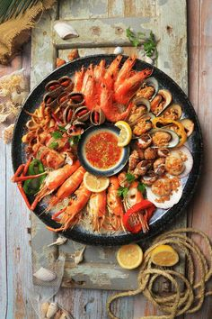

Shrimps
Shrimps are small, tasty crustaceans with a delicate, sweet flavor. They have a curved body and are often found in oceans and freshwater. They're a popular seafood choice worldwide, enjoyed in various dishes like stir-fries, pasta, and soups.
About Us
Welcome to King Lucas, your premier destination for fresh crabs and seafood. Our commitment to quality and sustainability ensures that you receive the best products available. With years of experience in the seafood industry, we take pride in delivering exceptional service and delicious dishes that will satisfy your cravings.
Join us on a culinary journey and explore the rich flavors of the sea. Whether you're dining in or taking out, we guarantee a delightful experience with every bite.

